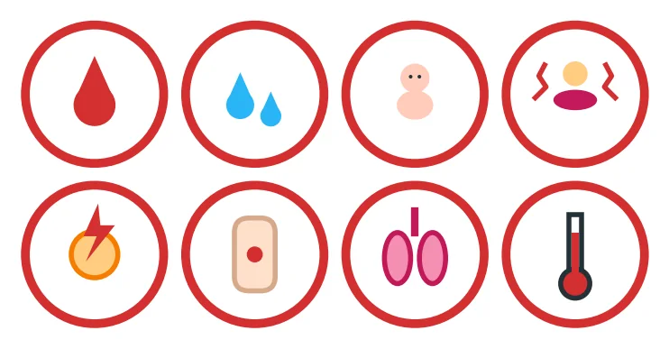
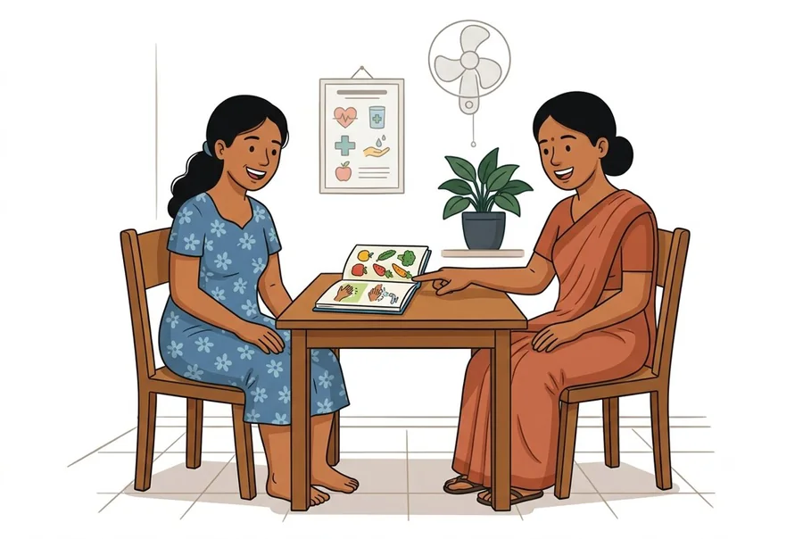

F-02All women
වහාම රෝහලට පැමිණෙන්න !
உடனடியாக மருத்துவமனைக்கு வாருங்கள் (எல்லாப் பெண்களும்)
- අධික රුධිර වහනය (පැයක් ඇතුළත පෑඩ් එකක් තෙමෙන තරම්), නැතහොත් ගර්භනී කාලයේ ඕනෑම රුධිර වහනයක්.
- වතුර ගැලීම, නැතහොත් දරුවාගේ චලනය බොහෝ අඩුවීම.
- වලිප්පුව හෝ සිහිසුන් වීම.
- දරුණු හිසරදය, ඇස් ඉදිරිපිට විදුලි එලි පෙනීම හෝ බොඳවී පෙනීම.
- දරුණු බඩේ වේදනාව.
- හුස්ම ගැනීමේ අපහසුව, නැතහොත් තොල් නිල් පැහැ වීම.
- අධික උණ, නැතහොත් දුර්ගන්ධයක් සහිත ස්රාවයක්.
- ශල්යකර්මයකින් පසු: තුවාලය විවෘත වීම හෝ සැරව ගලා යාම, උණ, කකුල් පෙති වේදනාව හෝ ඉදිමීම, හදිසි හුස්ම හිරවීම.
- அதிக இரத்தப்போக்கு (ஒரு மணி நேரத்தில் பேட் நனையுமளவு), அல்லது கர்ப்ப காலத்தில் எந்த இரத்தப்போக்கும்.
- பனிக்குடம் உடைதல் அல்லது குழந்தையின் அசைவு மிகவும் குறைதல்.
- வலிப்பு, அல்லது மயங்கி விழுதல்.
- கடுமையான தலைவலி, கண்முன் ஒளிக்கீற்றுகள் அல்லது பார்வை மங்குதல்.
- கடுமையான வயிற்று வலி.
- மூச்சு விடச் சிரமம், அல்லது உதடுகள் நீல நிறமாதல்.
- அதிகக் காய்ச்சல், அல்லது துர்நாற்றமுள்ள வெள்ளைப்படுதல்.
- அறுவைச் சிகிச்சைக்குப் பின்: காயம் திறத்தல் அல்லது சீழ் வடிதல், காய்ச்சல், கால் தசை வலி அல்லது வீக்கம், திடீர் மூச்சுத் திணறல்.

F-01For the person teaching
මෙම පොත භාවිතා කරන ආකාරය (උගන්වන අය සඳහා)
இப்புத்தகத்தைப் பயன்படுத்தும் முறை (கற்பிப்பவருக்கு)
- එක් එක් කොටසක් බැගින් කාන්තාව සමඟ කතා කරන්න. පින්තූර පෙන්වා දෙන්න.
- ඇයට කර පෙන්වන්න කියා ඉල්ලන්න (සීනි පරීක්ෂාව, ඉන්හේලරය භාවිතය, ඉන්සියුලින් ඇදීම).
- පසුපස ඇති නිදර්ශන පිටු පෙන්වන්න. ඇයට ඒවා තමන්ගේම සායන පොතට පිටපත් කරගැනීමට දෙන්න.
- සෑම දිනක්ම සායනයට පැමිණෙන විට සායන පොත සහ බෙහෙත් ගෙන එන ලෙස කියන්න.
- ஒரு நேரத்தில் ஒரு பகுதியாக அந்தப் பெண்ணுடன் கலந்துரையாடுங்கள். படங்களைக் காட்டுங்கள்.
- அவரையே செய்து காட்டச் சொல்லுங்கள் (சர்க்கரை பரிசோதனை, இன்ஹேலர் பயன்பாடு, இன்சுலின் எடுத்தல்).
- பின்னால் உள்ள மாதிரிப் பக்கங்களைக் காட்டுங்கள். அவர் அவற்றைத் தமது சொந்த கிளினிக் புத்தகத்தில் பிரதி எடுத்துக்கொள்வார்.
- ஒவ்வொரு கிளினிக் வருகைக்கும் கிளினிக் புத்தகத்தையும் மருந்துகளையும் கொண்டுவரச் சொல்லுங்கள்.
